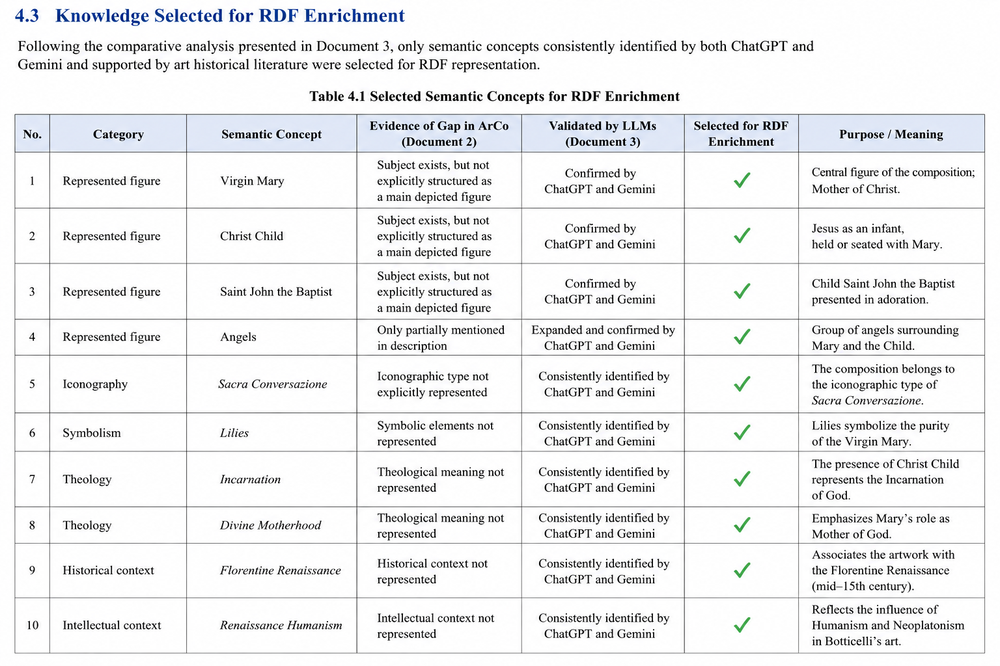
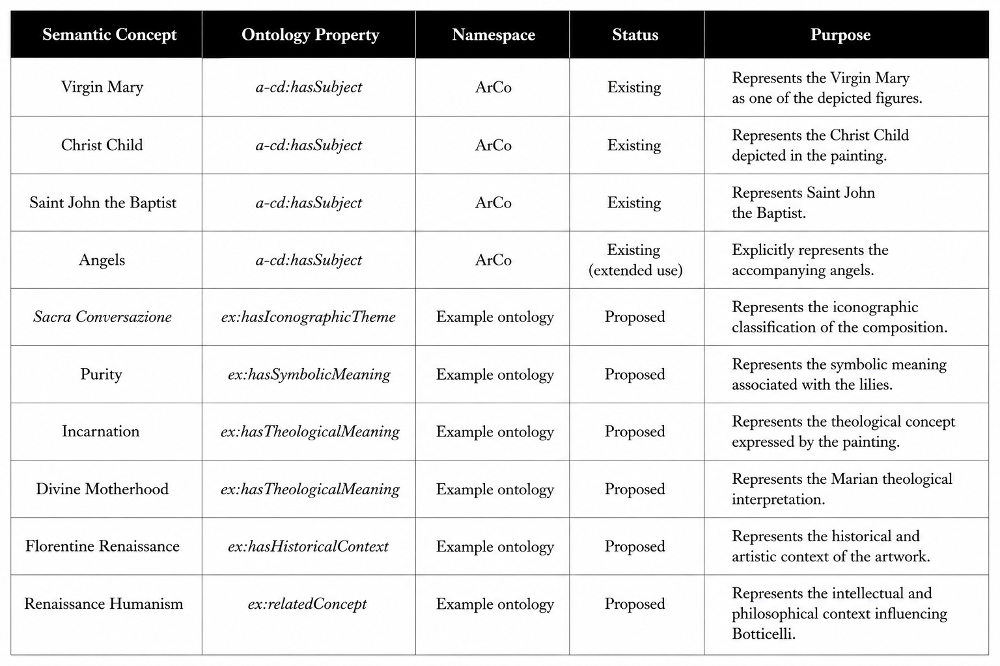
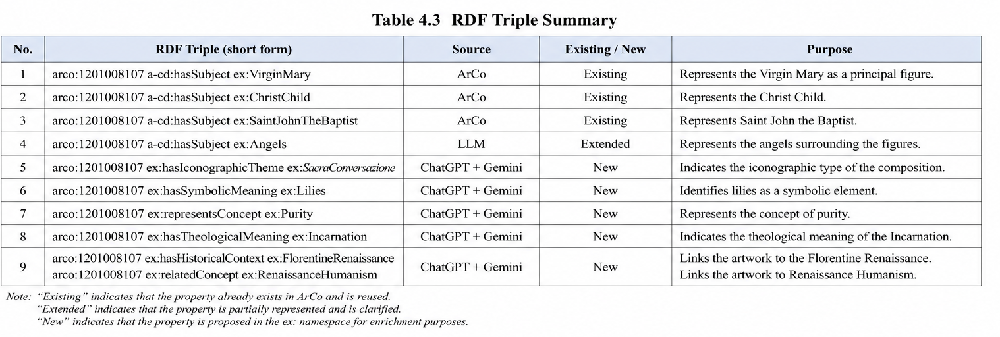
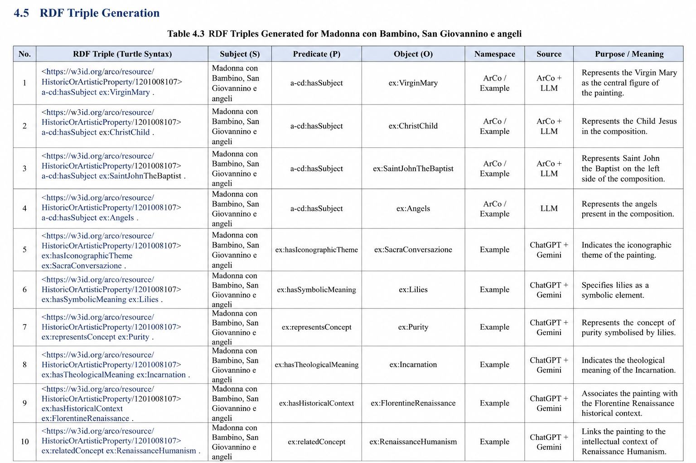
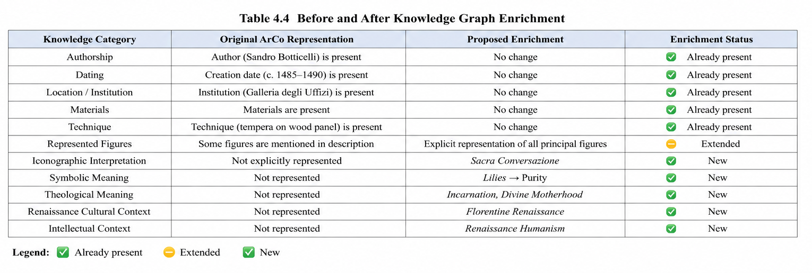

RDF Triple Generation and Knowledge Graph Enrichment
4.1 Introduction
The previous chapters demonstrated that the ArCo Knowledge Graph provides extensive administrative and cataloguing metadata for the selected artwork Madonna con Bambino, San Giovannino e angeli by Sandro Botticelli. The SPARQL analysis performed in SPARQL Exploration revealed that while ArCo accurately represents authorship, dating, location, materials, and documentation, it lacks several semantic dimensions, including iconographic interpretation, symbolic meaning, theological concepts, and Renaissance cultural context.
LLM Knowledge Extraction addressed these knowledge gaps by applying different prompting strategies to Large Language Models, including Standard Prompting, Few-shot Prompting, and Chain-of-Thought Prompting. The responses generated by ChatGPT and Gemini were compared and validated to identify reliable semantic information suitable for enrichment.
The objective of this chapter is to demonstrate how the validated semantic knowledge extracted from the LLM analysis can be transformed into structured RDF triples. These RDF statements provide a machine-readable representation of iconographic, theological, symbolic, and historical information that complements the existing ArCo metadata while remaining compatible with Semantic Web technologies.
4.2 Objectives of RDF Enrichment
The primary objective of this chapter is not to replace the existing metadata contained within the ArCo Knowledge Graph but rather to enrich it with additional semantic information extracted from Large Language Models.
More specifically, the enrichment process aims to:
- preserve the original ArCo metadata without modification;
- represent semantic concepts identified during the LLM analysis using RDF triples;
- improve the expressiveness of the Knowledge Graph;
- demonstrate how symbolic, iconographic, theological, and historical knowledge can be represented in machine-readable form;
- provide a reproducible workflow for integrating LLM-generated knowledge into cultural heritage knowledge graphs.
The enrichment proposed in this chapter is intentionally illustrative and serves as a proof of concept for combining Semantic Web technologies with Large Language Models.
4.3 Knowledge Selected for RDF Enrichment
Following the comparative analysis presented in LLM Knowledge Extraction, only semantic concepts consistently identified by both ChatGPT and Gemini and supported by art historical literature were selected for RDF representation.
Administrative metadata already available within ArCo, including authorship, dating, dimensions, location, and materials, were excluded from the enrichment process because they are already represented in the existing Knowledge Graph.
Instead, this chapter focuses exclusively on semantic concepts that were identified as knowledge gaps during the SPARQL analysis.
Table 4.1 Selected Semantic Concepts
| Category | Semantic Concept | Source |
|---|---|---|
| Represented figure | Virgin Mary | ArCo + LLM |
| Represented figure | Christ Child | ArCo + LLM |
| Represented figure | Saint John the Baptist | ArCo + LLM |
| Represented figure | Angels | LLM |
| Iconography | Sacra Conversazione | ChatGPT + Gemini |
| Symbolism | Lilies | ChatGPT + Gemini |
| Theology | Incarnation | ChatGPT + Gemini |
| Theology | Divine Motherhood | ChatGPT + Gemini |
| Historical context | Florentine Renaissance | ChatGPT + Gemini |
| Intellectual context | Renaissance Humanism | ChatGPT + Gemini |
4.3.1 Analysis
The selected semantic concepts correspond directly to the knowledge gaps identified during the SPARQL analysis. While ArCo already provides structured descriptive metadata, it lacks explicit semantic descriptions of iconography, symbolism, theology, and historical interpretation.
The concepts selected in Table 4.1 therefore represent the additional knowledge required to enrich the cultural heritage description of Botticelli's painting without modifying the original catalogue data.
4.4 Ontology Mapping
Before generating RDF triples, the semantic concepts identified during the LLM analysis
were mapped to ontology properties suitable for machine-readable representation.
Whenever possible, existing ArCo ontology properties were reused in order to preserve
compatibility with the original Knowledge Graph. In particular, the property
a-cd:hasSubject was adopted to represent the principal figures depicted in the painting,
including the Virgin Mary, the Christ Child and Saint John the Baptist.
However, several semantic concepts identified during the comparative analysis, such as
iconography, symbolism, theological interpretation and Renaissance cultural context, are
not explicitly represented in the current ArCo ontology. For these concepts, illustrative
properties belonging to the ex: namespace were introduced exclusively for demonstration
purposes. These temporary properties simulate how additional semantic knowledge could
be represented before being aligned with more comprehensive cultural heritage
ontologies such as CIDOC CRM or Iconclass.
This ontology mapping provides a clear correspondence between the semantic concepts extracted from Large Language Models and their RDF representation. It also ensures transparency and reproducibility throughout the semantic enrichment workflow.

4.5 RDF Triple Generation
4.5.1 Introduction
Once the ontology mapping has been completed, the validated semantic concepts can be transformed into RDF triples. Each triple represents one semantic statement connecting the selected artwork with an entity or concept identified during the LLM analysis.
The following RDF statements are presented using Turtle syntax because it is one of the most readable RDF serialisation formats and is widely adopted within the Semantic Web community.
4.5.2 Prefixes
@prefix arco: <https://w3id.org/arco/resource/> . @prefix a-cd: <https://w3id.org/arco/ontology/context-description/> . @prefix ex: <http://example.org/ontology/> . @prefix rdf: <http://www.w3.org/1999/02/22-rdf-syntax-ns#> .
4.5.3 RDF Triple 1
<https://w3id.org/arco/resource/HistoricOrArtisticProperty/1201008107>
a-cd:hasSubject ex:VirginMary .
Explanation. This RDF statement represents the Virgin Mary as one of the principal figures depicted in Botticelli's painting.
4.5.4 RDF Triple 2
<https://w3id.org/arco/resource/HistoricOrArtisticProperty/1201008107>
a-cd:hasSubject ex:ChristChild .
Explanation. Represents the Christ Child.
4.5.5 RDF Triple 3
<https://w3id.org/arco/resource/HistoricOrArtisticProperty/1201008107>
a-cd:hasSubject ex:SaintJohnTheBaptist .
Explanation. This triple represents Saint John the Baptist as one of the principal figures depicted in the composition.
4.5.6 RDF Triple 4
<https://w3id.org/arco/resource/HistoricOrArtisticProperty/1201008107>
a-cd:hasSubject ex:Angels .
Explanation. Represents the accompanying angels surrounding the Virgin and Christ Child.

4.5.7 RDF Triple 5
<https://w3id.org/arco/resource/HistoricOrArtisticProperty/1201008107>
ex:hasIconographicTheme ex:SacraConversazione .
Explanation. The LLM analysis identified the iconographic type of the composition as Sacra Conversazione. This concept is not explicitly represented within ArCo.
4.5.8 RDF Triple 6
<https://w3id.org/arco/resource/HistoricOrArtisticProperty/1201008107>
ex:hasSymbolicMeaning ex:Purity .
Explanation. The lilies depicted in the painting traditionally symbolise the purity of the Virgin Mary.
4.5.9 RDF Triple 7
<https://w3id.org/arco/resource/HistoricOrArtisticProperty/1201008107>
ex:hasTheologicalMeaning ex:Incarnation .
Explanation. Introduces the theological concept of the Incarnation identified during the LLM analysis.
4.5.10 RDF Triple 8
<https://w3id.org/arco/resource/HistoricOrArtisticProperty/1201008107>
ex:hasHistoricalContext ex:FlorentineRenaissance .
Explanation. Associates the artwork with the Florentine Renaissance cultural environment.
4.5.11 RDF Triple 9
<https://w3id.org/arco/resource/HistoricOrArtisticProperty/1201008107>
ex:relatedConcept ex:RenaissanceHumanism .
Explanation. Represents the intellectual influence of Renaissance Humanism.

4.6 RDF Triple Explanation
The RDF triples presented in the previous section illustrate how semantic knowledge extracted from Large Language Models can be transformed into structured Linked Data. The first four triples reuse existing ArCo properties to represent the principal figures of the composition. These statements preserve compatibility with the original ontology and therefore do not modify the existing knowledge graph.
The remaining RDF triples represent new semantic knowledge that is currently absent
from ArCo. These include iconographic classification, symbolic interpretation,
theological concepts and Renaissance cultural context. Although the proposed RDF
properties belong to the illustrative ex: namespace, they demonstrate how semantic
enrichment may be represented in a machine-readable format.
Together, these RDF statements provide a richer semantic description of Botticelli's painting while maintaining interoperability with Semantic Web technologies.

4.7 Before and After Knowledge Graph Enrichment

4.8 Discussion
The proposed enrichment complements the existing metadata rather than replacing it. Administrative and cataloguing information already available in ArCo remains unchanged, while the new RDF statements provide additional semantic layers describing iconography, symbolism, theological interpretation and Renaissance cultural context. Such enrichment improves the expressiveness of the knowledge graph and supports more sophisticated semantic search, reasoning and cultural heritage discovery.
Beyond improving metadata quality, semantic enrichment also enables more advanced applications such as semantic search, intelligent recommendation systems, ontology alignment, and interoperability with external cultural heritage knowledge graphs. Consequently, the proposed enrichment benefits both human researchers and machine- based information retrieval systems.
4.9 Limitations
The illustrative properties defined within the ex: namespace are introduced solely for
demonstration purposes because equivalent properties are not currently available in the
explored ArCo model. Before integration into a production knowledge graph, all
proposed RDF statements should be validated by domain experts and, where appropriate,
aligned with established ontologies such as CIDOC CRM or Iconclass.
4.10 Conclusion
This chapter demonstrated how semantic knowledge extracted from Large Language Models can be transformed into structured RDF triples for the selected cultural object, Madonna con Bambino, San Giovannino e angeli. The proposed enrichment addresses the knowledge gaps identified during the SPARQL analysis by introducing semantic descriptions of iconography, symbolism, theology and Renaissance cultural context. Although the proposed RDF model is illustrative, it demonstrates a practical workflow for enriching cultural heritage knowledge graphs while remaining consistent with Semantic Web principles.
The proposed workflow demonstrates that Large Language Models can support cultural heritage documentation not by replacing expert knowledge, but by identifying additional semantic concepts that can subsequently be validated and represented in RDF. This hybrid methodology combines Knowledge Graph technologies with Artificial Intelligence and illustrates a practical approach to semantic enrichment for cultural heritage collections.